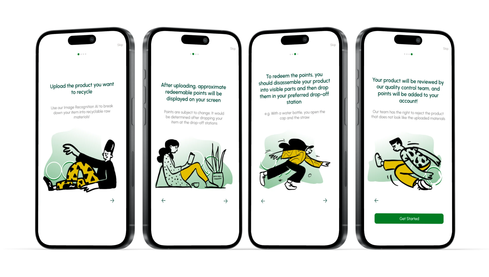
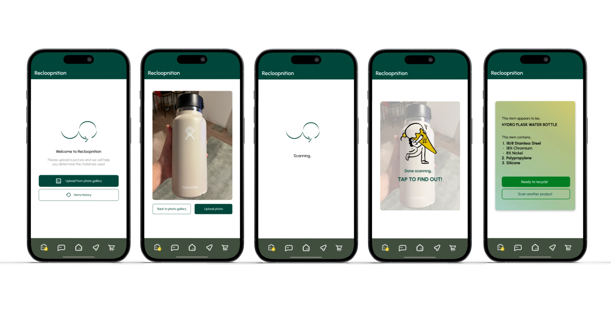
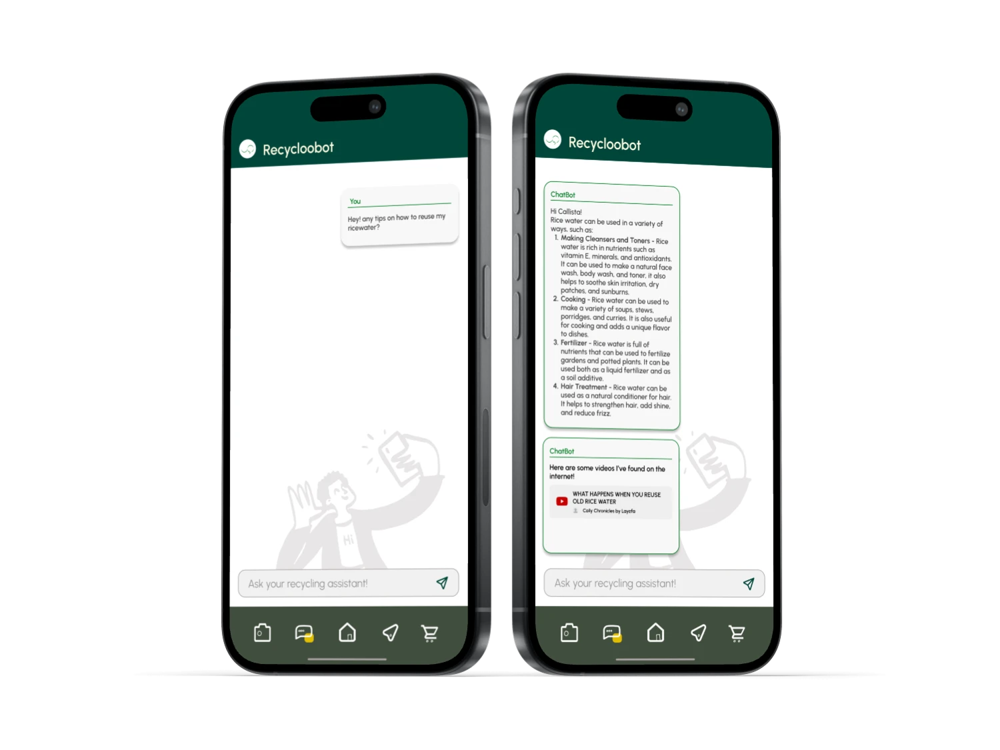
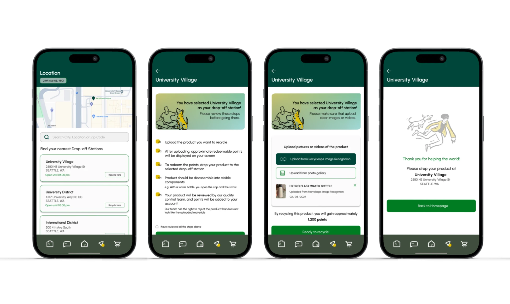
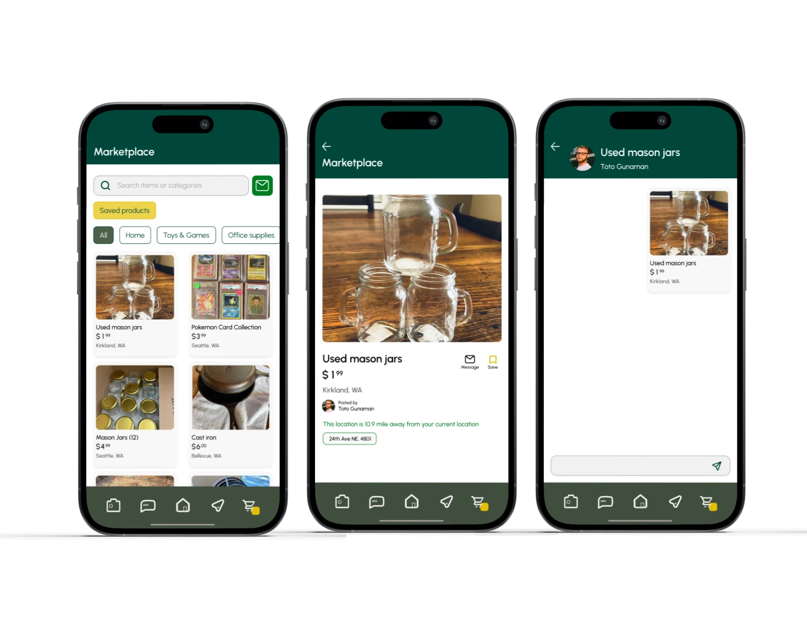

Recycloop
The U.S. recycling system is broken by inconsistency — rules vary by city, contamination rates are high, and most people simply don't know what goes where. Recycloop is a mobile platform that fixes that with AI, rewards, and a circular marketplace.

Recycloop is an innovative mobile platform that champions the recycling movement for future generations. The mission centers on nurturing a sustainability culture that benefits both humanity and the earth — by making the right choice the easy choice.
The app encourages users to break down items into recyclable raw materials for nearby drop-off stations, converting collected materials into reward points as tangible incentives for sustainable behavior.
The U.S. recycling system suffers from consumer confusion due to inconsistent recycling policies across regions, causing high contamination rates, operational inefficiencies, and cascading environmental and economic impacts.
Many individuals lack the knowledge and tools needed to participate effectively — resulting in improper disposal and chronically underutilized recycling programs.
Design a unified, accessible recycling platform that educates consumers on location-specific rules, reduces confusion and contamination, and promotes sustainable behaviors through meaningful incentives.
Americans broadly support recycling — but the system consistently fails them through complexity, inconsistency, and a lack of feedback. These numbers show the size of the gap between intention and action.
of Americans say they support recycling — yet only a fraction recycle correctly, revealing a massive gap between intent and informed action.
of materials placed in recycling bins are contaminated. One wrong item can render an entire batch unrecyclable, costing municipalities millions annually.
of consumers are confused about which plastics can be recycled — the single most cited barrier to participation across all demographic groups.
more likely to adopt a sustainable behavior consistently when a reward or tangible incentive is attached — validating the points-based model at Recycloop's core.

Image recognition identifies any item and tells users exactly whether it's recyclable at their location — eliminating the guesswork that causes contamination in the first place.

The AI assistant surfaces creative reuse suggestions for items that can't be recycled conventionally — shifting user mindset from disposal to circular thinking.

A B2B and C2C marketplace connects individuals with businesses and peers to buy and sell recycled materials — giving waste economic value and keeping materials in circulation longer.

B2B Marketplace

C2C Marketplace
This project came out of the University of Washington's 2024 Environmental Innovation Challenge. As the sole UX Designer, I directed the full creative vision — from designing the logo to crafting custom organic-feeling icons that aligned with Recycloop's ethos.
The most important realization: people don't fail to recycle because they don't care — they fail because the system punishes good intentions with confusion and zero feedback.
Designing around behavior change rather than feature delivery shaped every decision. The rewards system, the AI scanner, and the marketplace aren't separate features — they form a single loop: scan, act, earn, repeat.
The next iteration would explore community-level impact dashboards — neighborhood recycling leaderboards that make collective progress as visible as individual effort.
Every design decision was stress-tested against one question: does this add steps or remove them? The AI scanner exists precisely because looking up recycling rules is the step people skip.
Intrinsic motivation alone isn't enough for sustained behavior change. The points system provides the external loop that bridges intention and action until the habit forms on its own.
Designing the logo and icon set wasn't decoration — it was a core UX decision. Organic, approachable visuals signal that this is a tool for everyone, not an environmental guilt machine.
The three solutions — AI sorting, chatbot, marketplace — only work because they reinforce each other. Designing them as a connected system, not isolated features, was the hardest and most important call.
Sté is short for Steven — and it's a small wink at stay. It's the thread running through my work: design that invites people to stay engaged, art that holds attention, fragrances that linger long after the wearer leaves the room. Welcome. Sté with me a while.